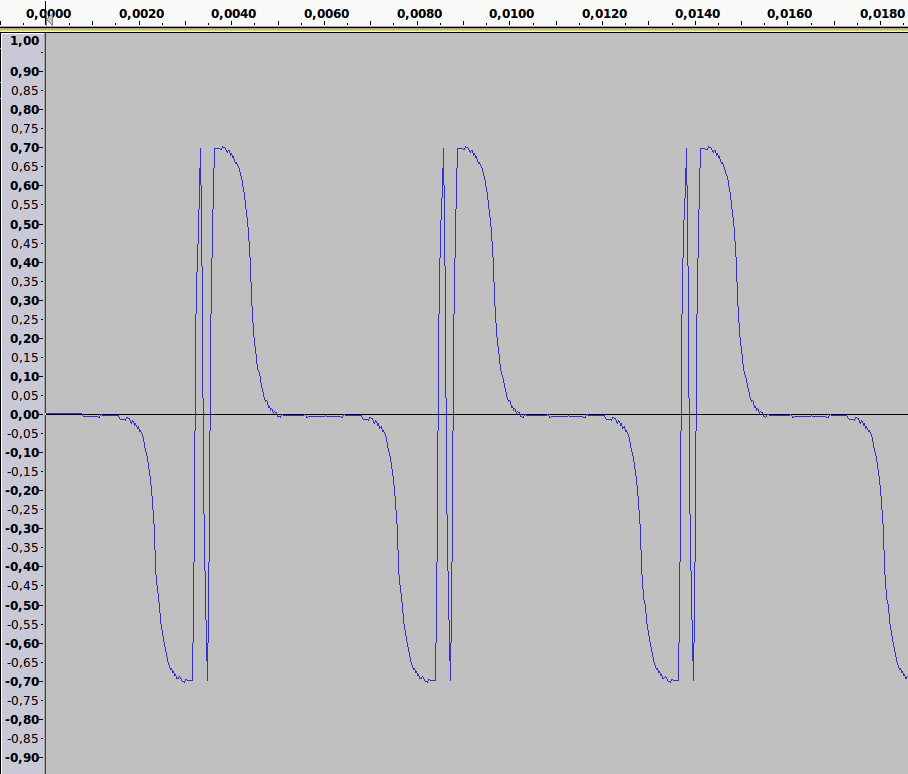
The fundamental study of 2 amounts forehead accompanied by three falling edges compared to the inertia, which could result in an area without front.
128 35 127 35 is the flat for a period of 70 without wavefront
the leading edge 218 has a duration of 70, and is repeated 2 times to give him strength
The falling edge grip has a duration of 17, and falling back a duration of 17
Repeat line :
128 35 127 35 38 70 218 7 38 7 218 7 127 70
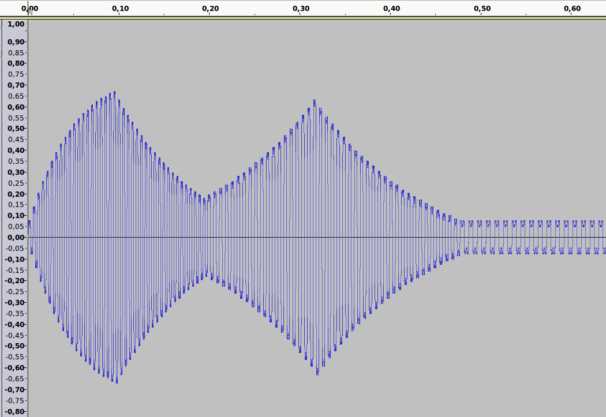
138 75 134 17 138 17 118 75 122 17 118 17
We create an amplitude increase exponentially kind loop feedback factor 10, until
214 75 210 17 214 17 42 75 46 17 42 17
We create a decrease in amplitude loop type reaction exponential factor 20, until
151 75 147 17 151 17 105 75 109 17 105 17
We create an amplitude increase exponentially kind loop feedback factor 10, until
209 75 205 34 209 34 47 75 51 34 47 34
We create a decrease in amplitude loop type reaction exponential factor 20, until
139 75 135 34 139 34 117 75 121 34 117 34
Repeat line :
138 75 134 68 138 68 118 75 122 68 118 68comprehensive spreadsheet data to draw the sound generated
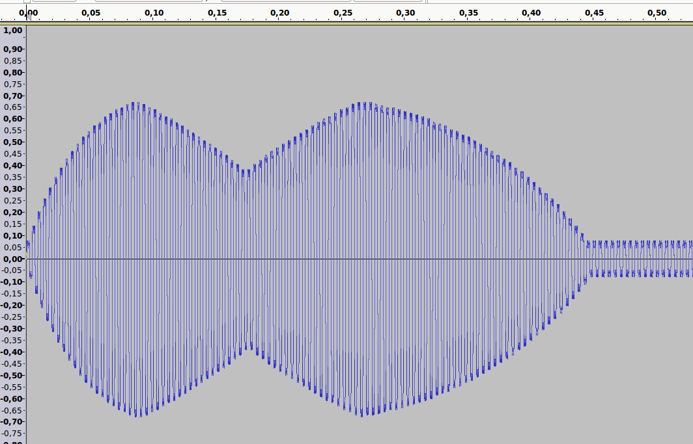
138 50 134 28 138 25 117 44 121 22 117 24
We create an amplitude increase exponentially kind loop feedback factor 10, until
214 50 210 28 214 25 41 44 45 22 41 24
We create a decrease in amplitude loop type reaction exponential factor 40, until
177 50 173 28 177 25 78 44 82 22 78 24
We create an amplitude increase exponentially kind loop feedback factor 40, until
214 50 210 34 214 27 42 44 46 26 42 22
We create a decrease in amplitude loop type reaction exponential factor 40, until
138 50 134 36 138 29 118 44 122 28 118 24
Repeat line :
138 50 134 36 138 29 118 44 122 28 118 24comprehensive spreadsheet data to draw the sound generated
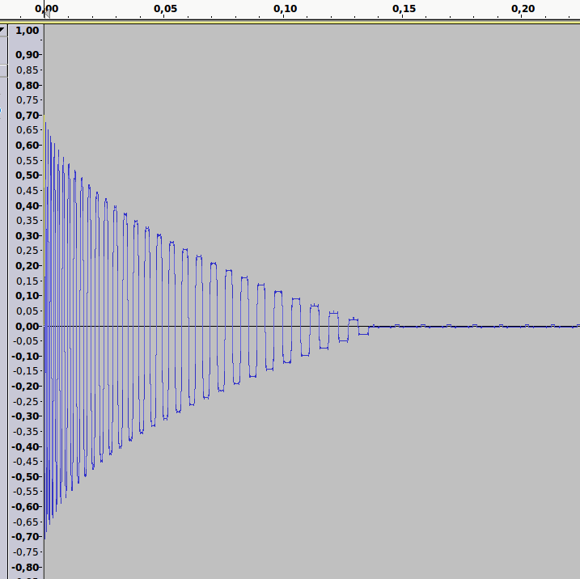
A decrease in amplitude of three for an increase three in time
218 10 37 13
until
128 190 127 193
Followed by a space without front for inertia
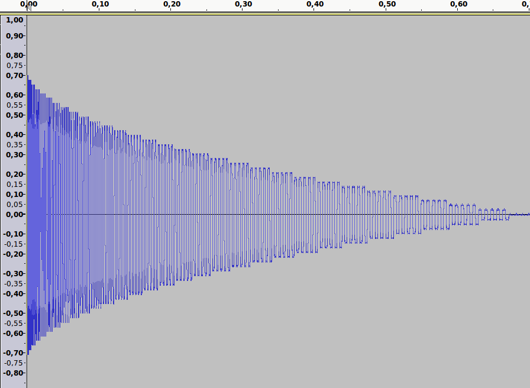
Une diminution en amplitude de trois pendant une augmentation en durée de trois
à laquelle nous donnons de la force en répétant 5 fois chaque front
218 10 37 13 218 10 37 13 218 10 37 13 218 10 37 13 218 10 37 13
jusqu"à
131 184 124 187 131 184 124 187 131 184 124 187 131 184 124 187 131 184 124 187
Suivit d'un espace sans front pour l'inertie, une répétition de
128 240 127 240 128 240 127 240 128 240 127 240 128 240 127 240 128 240 127 240
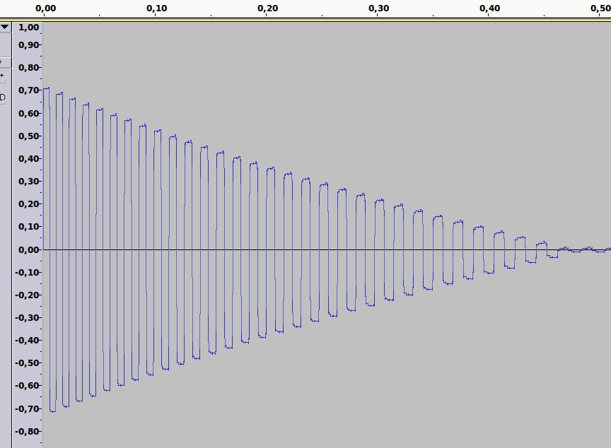
Une diminution en amplitude de trois pendant une augmentation en durée de trois
marteau à plateau, nous ajoutons un plateau de durée 240 sur les crètes des amplitudes
218 10 219 240 37 13 36 240
jusqu"à
131 184 132 240 124 187 123 240
Suivit d'un espace sans front pour l'inertie, une répétition de
128 240 129 240 127 240 126 240
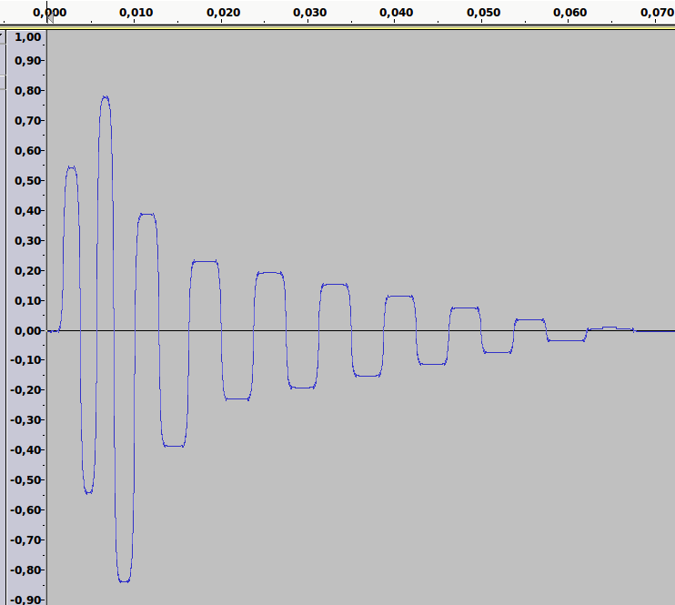
marteau cour, composé de 9 fronts montants construit en amplitude exponentielle amortie régressive
127 50 198 75 58 95 228 75 20 95 178 115 78 135 158 165 98 165 153 165 103 165 148 165 108 165 143 165 113 165 138 165 118 165 133 165 123 165
Suivit d'un espace sans front pour l'inertie, une répétition de
128 240 129 240 127 240 126 240
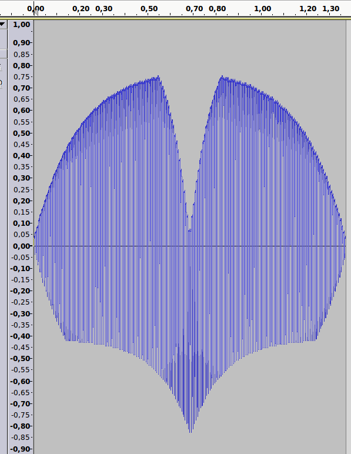
Un plateau de durée 100 variant à 110 est placé sur la crète des fronts montant
et un plateau de durée 7 est placé sur la crète des fronts descendants
132 44 133 200 124 44 123 7
à
223 46 224 207 56 46 55 7
à
136 46 137 209 23 46 22 7
puis retour inverse
Données du tableur complet pour dessiner le son généré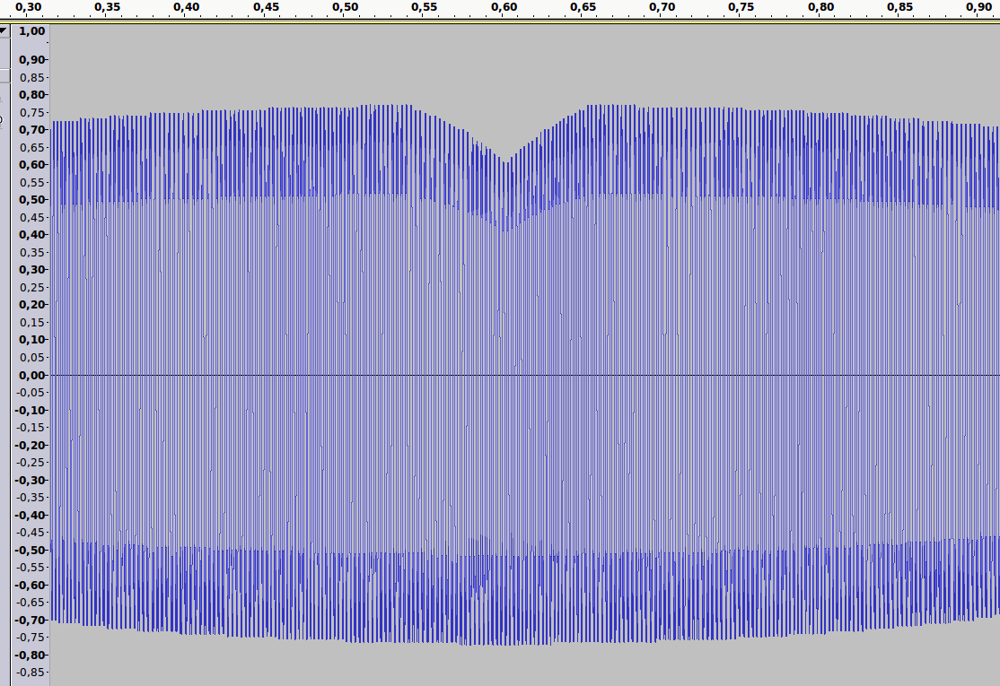
L'ondulation est générée entièrement avec les durées, c'est l'effet de deux types de variation différentes en durée.
la première est une variation sur une base de 4 inversée, la deuxième sur une base de 1 assez longue, pour éviter d'arriver au gazouillis d'oiseau
Bouche sans ondulation
Si nous ondulons les amplitudes jusqu'à créer une forme de balle, nous obtenons un son haché entre les balles.
Données du tableur complet pour dessiner le son généré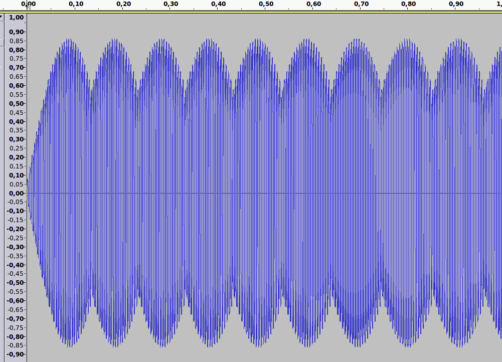
Si nous ondulons les amplitudes sans créer une forme de balle, nous obtenons une sorte de chenille.
Données du tableur complet pour dessiner le son généré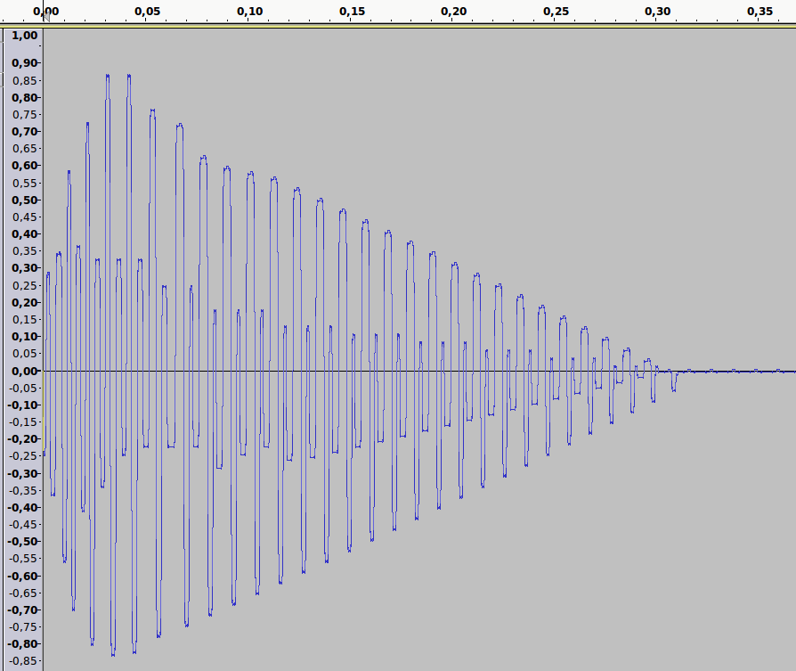
Au début nous construisons une signature de forme guitare, c'est un marteau acoustique
puis on laisse couler les durées en diminuant les amplitudes
96 22 165 106 81 64 172 174 56 110 203 100 38 78 175 112 75 115 221 90 25 87 170 123 84 120 239 98 21 118 170 126 96 119 239 98 22 116 170 125 99 118 226 169 28 114 160 124 99 117 220 250 32 112 160 121 99 31 208 250 36 110 151 116 91 31 204 250 40 108 151 122 96 31 202 250 44 106 151 118 99 31 200 250 48 104 145 114 94 31 196 250 52 102 145 113 95 31 192 250 56 100 145 112 97 31 188 250 60 98 142 111 99 31 184 250 64 96 142 110 101 31 180 250 68 94 142 109 103 31 176 250 72 92 139 108 105 31 172 250 76 90 139 107 107 31 168 250 80 88 139 106 109 31 164 250 84 86 136 105 111 31 160 250 88 84 136 104 113 31 156 250 92 82 136 103 115 31 152 250 96 80 133 102 117 31 148 250 100 78 133 101 119 31 144 250 104 76 133 100 121 31 140 250 108 74 130 99 123 31 136 250 112 72 130 98 125 31 132 250 116 70 130 97 127 31 128 250 120 68 127 96
puis une répétition pour l'inertie de
128 240 127 240 128 240 127 240
J'ai généré cette forme en m'inspirant d'un enregistrement de Roanico Pedro Accorios
à cette adresse internet : https://plus.google.com/u/0/114525492530731349538/posts
Dans certains cas, l'identification du dessin pour obtenir le son désiré échape
La solution est de trouver un son proche et d'utiliser un modéliseur grossier pour entrevoir les formes dans un tableau.
Un modéliseur grossier car trop d'informations tue l'information, et que notre but n'est pas d'imiter.
Dans la modélisation des forces, il existe un phénomène qui fait comme sortir l'énergie de la matière, les sons générées dans cette dimension n'apparaitront pas, il faut pour cela utiliser un modéliseur fin qui sortirai du cadre d'un simple jeu ludique.
Le fichier convertisseur.c une fois compilé transforme un fichier wav mono que l'on a renommé en joris.wav en abadie.jo
Le fichier jo-a-joa.c une fois compilé transforme un fichier abadie.jo en abadie.joa prèt à être ouvert pour être introduit dans un tableur avant analyse.
La manière la plus simple pour créer son fichier audio est celle indiquée dans lecjo, c'est tout simplement de placer à la suite les différents sons soit dans le tableur, soit dans le fichier audio sous sa forme abadie.joa
En cas de création de rythme, qui peut se traduire par une répétition de série de sons, il est plus interressant de manipuler le contenue du format abadie.joa ou abadie.jo directement en langage c .
Pour aller plus loin, le format abadie.adn, n'est rien d'autre que la génération des formes en langage cpp
Le partage de fichier audio est possible en lecture directe dans firefox en utilisant l'Addon lecjoa
Il peut aussi être partagé sous forme de fichier (en ligne, en attaché ou sur support). Selon le poids du fichier abadie.jo, il peut être interessant de le compresser.
Mais souvent comme dans le cas au dessus du marteau cour qui ne pèse que quelques dizaines d'octets, le format de compression est à lui seul bien plus lours que le fichier en abadie.jo .
En d'autres mots, dans le cas de mixe qui génère la bande son d'une vidéo générée en HTML, le format abadie.jo reste bien plus léger. Le choix de compresser ou de ne pas compresser le fichier audio est directement induit par l'utilisation qui va en être fait.